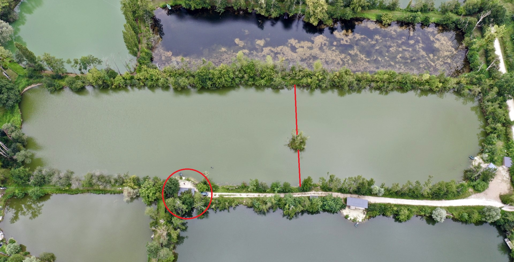

Mapa spotów / dna
Wspólna baza spotów, głębokości, typu dna, zaczepów, notatek, najlepszych warunków i skuteczności na podstawie zapisanych połowów.

Widok łowiska z góry — dobry punkt odniesienia do myślenia o stanowiskach, marginesach,
kierunku wiatru i układzie wody.
Dodaj spot
📍 Podsumowanie spotów
Liczba spotów0
Śr. odległość--
Śr. głębokość--
🗂️ Lista spotów
Ładowanie spotów...